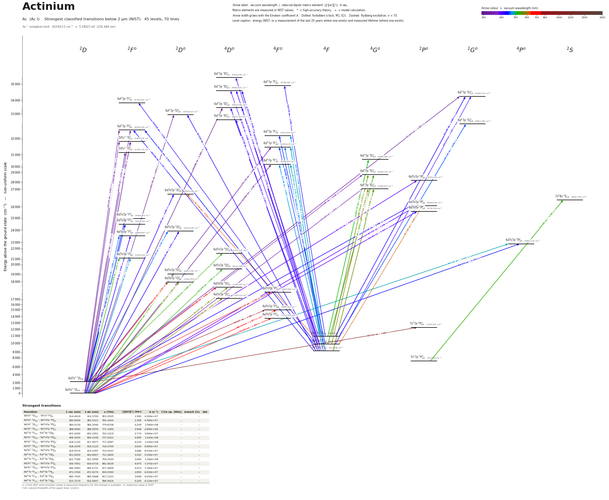

Actinium energy level diagram
Energy levels and transitions of neutral actinium (Ac I): the 72 strongest classified lines below 2 µm from the NIST Atomic Spectra Database and the 45 levels they connect, each line with its vacuum wavelength, frequency and, for 71 of them, the reduced dipole matrix element derived from the NIST transition rate. Measured lifetimes, transition rates, hyperfine constants and isotope shifts from the literature are included, each with its citation.
Hover a line or a level to isolate it, click to keep it selected. Scroll to zoom, drag to move.

Download: diagram (PDF) diagram (SVG) transitions (CSV) levels (CSV) source code

Key transitions of actinium
| Transition | λ vac (nm) | λ air (nm) | ν (THz) | |⟨J‖er‖J′⟩| (ea₀) | A (s⁻¹) | Γ/2π up. (MHz) | branch (%) | Use |
|---|---|---|---|---|---|---|---|---|
| 6d7s2 2D3/2 – 6d7s7p 2P°3/2 | 383.6409 | 383.5321 | 781.4404 | 2.308 | 4.780e+07 | – | – | hyperfine structure of 227Ac measured |
| 6d7s2 2D3/2 – 6d7s7p 2P°1/2 | 388.6660 | 388.5559 | 771.3369 | 3.948 | 2.690e+08 | – | – | hyperfine structure of 227Ac measured |
| 6d7s2 2D5/2 – 6d7s7p 2P°3/2 | 419.5579 | 419.4397 | 714.5437 | 3.086 | 6.530e+07 | – | – | hyperfine structure of 227Ac measured |
| 6d7s2 2D3/2 – 6d7s7p 4P°5/2 | 438.5378 | 438.4147 | 683.61821(10) | 2.178 | 1.900e+07 | – | – | the actinium laser-spectroscopy line: first step of the r… |
| 6d7s2 2D5/2 – 6d7s7p 2F°7/2 | 439.7951 | 439.6716 | 681.6639 | 4.975 | 7.370e+07 | – | – | hyperfine structure of 227Ac measured |
| 6d7s2 2D3/2 – 6d7s7p 4F°3/2 | 729.2402 | 729.0394 | 411.1025 | 1.350 | 2.380e+06 | 0.4521 | 83.8 | first-step line used for the lifetime measurement of the… |
| 6d7s2 2D3/2 – 7s27p 2P°3/2 | 814.5584 | 814.3345 | 368.0429 | – | – | 0.6241 | – | first step of the two-step resonance ionization in which… |
| 6d7s2 2D3/2 – 7s27p 2P°1/2 | 1337.3704 | 1337.0048 | 224.1656 | 1.880 | 1.497e+06 | 0.2383 | 100 | first observed 2020 by two-step resonance ionization |
λ, ν from NIST level energies unless a measured frequency for this isotope is available. A: measured value or NIST. Γ/2π: natural linewidth of the upper level, 1/(2πτ).
227Ac hyperfine structure (I = 3/2)
| Level | A (MHz) | B (MHz) | Shift of each F level from the centre of gravity (MHz) |
|---|---|---|---|
| 6d7s2 2D3/2 | 50.5(5) | 595.6(15) | F=0: +555.27 F=1: +10.13 F=2: -484.55 F=3: +262.44 |
| 6d7s2 2D5/2 | 255(4) | 706(19) | F=1: -844.55 F=2: -899.35 F=3: -452.05 F=4: +1132.75 |
| 7s27p 2P°3/2 | 513(8) | 1260(52) | F=0: -348.75 F=1: -1095.75 F=2: -1329.75 F=3: +1469.25 |
| 6d7s7p 4P°5/2 | 2104.8(22) | 110.1(22) | F=1: -10973.13 F=2: -6851.61 F=3: -586.75 F=4: +7920.52 |
| 6d7s7p 2F°7/2 | -280(4) | 1278(30) | F=2: +2576.40 F=3: +823.00 F=4: -663.20 F=5: -1152.20 |
| 6d7s7p 2P°1/2 | 1972(4) | – | F=1: -2464.38 F=2: +1478.62 |
| 6d7s7p 2P°3/2 | -990.7(12) | -21(4) | F=0: +3689.25 F=1: +2719.25 F=2: +758.55 F=3: -2234.25 |
Measured A, B constants; sources in the data file.
Isotope shifts
| Transition | λ vac (nm) | Isotopes | Shift (MHz) |
|---|---|---|---|
| 6d7s2 2D3/2 – 6d7s7p 4P°5/2 | 438.538 | 225-215 | -50300(210) |
| 6d7s2 2D3/2 – 6d7s7p 4P°5/2 | 438.538 | 226-215 | -54700(220) |
| 6d7s2 2D3/2 – 6d7s7p 4P°5/2 | 438.538 | 227-215 | -58300(100) |
| 6d7s2 2D3/2 – 6d7s7p 4P°5/2 | 438.538 | 228-215 | -62000(1000) |
| 6d7s2 2D3/2 – 6d7s7p 4P°5/2 | 438.538 | 229-215 | -64900(320) |
| 6d7s2 2D3/2 – 6d7s7p 4P°5/2 | 438.538 | 214-215 | 2969(42) |
| 6d7s2 2D3/2 – 6d7s7p 4P°5/2 | 438.538 | 213-215 | 4282(404) |
| 6d7s2 2D3/2 – 6d7s7p 4P°5/2 | 438.538 | 212-215 | 7710(393) |
Shift = ν(first isotope) − ν(second isotope).
Listed Ac transitions below 2 µm
| Lower level | Upper level | λ vacuum (nm) | λ air (nm) | ν (THz) | Type | |⟨J‖er‖J′⟩| (ea₀) | A (s⁻¹) | Branching (%) | Source of matrix element / A |
|---|---|---|---|---|---|---|---|---|---|
| 6d7s2 2D3/2 | 6d27p 4D°3/2 | 296.9681 | 296.8814 | 1009.5106 | E1 (intercombination) | 0.682 NIST | 9.000e+06 NIST | – | NIST ASD (accuracy E) |
| 6d7s2 2D3/2 | 6d27p 2D°3/2 | 303.7813 | 303.6929 | 986.8693 | E1 | 0.576 NIST | 6.000e+06 NIST | – | NIST ASD (accuracy E) |
| 6d7s2 2D3/2 | 6d27p 2F°5/2 | 307.7332 | 307.6438 | 974.1960 | E1 | 0.657 NIST | 5.000e+06 NIST | – | NIST ASD (accuracy E) |
| 6d7s2 2D5/2 | 6d27p 2G°7/2 | 311.2471 | 311.1568 | 963.1976 | E1 | 1.091 NIST | 1.000e+07 NIST | – | NIST ASD (accuracy E) |
| 6d7s2 2D3/2 | 5f7s2 2F°5/2 | 314.4619 | 314.3709 | 953.3505 | E1 | 1.990 NIST | 4.300e+07 NIST | – | NIST ASD (accuracy D+) |
| 6d7s2 2D3/2 | 6d27p 4F°3/2 | 328.9844 | 328.8897 | 911.2664 | E1 (intercombination) | 1.186 NIST | 2.000e+07 NIST | – | NIST ASD (accuracy E) |
| 6d7s2 2D5/2 | 6d27p 2F°5/2 | 330.4229 | 330.3278 | 907.2993 | E1 | 0.801 NIST | 6.000e+06 NIST | – | NIST ASD (accuracy E) |
| 6d7s2 2D5/2 | 5f7s2 2F°5/2 | 338.1930 | 338.0959 | 886.4539 | E1 | 0.895 NIST | 7.000e+06 NIST | – | NIST ASD (accuracy E) |
| 6d7s2 2D5/2 | 6d27p 4F°5/2 | 341.7256 | 341.6276 | 877.2901 | E1 (intercombination) | 1.498 NIST | 1.900e+07 NIST | – | NIST ASD (accuracy D) |
| 6d7s2 2D5/2 | 5f7s2 2F°7/2 | 344.7237 | 344.6250 | 869.6601 | E1 | 2.413 NIST | 3.600e+07 NIST | – | NIST ASD (accuracy C) |
| 6d7s2 2D3/2 | 6d27p 4G°5/2 | 370.2352 | 370.1299 | 809.7351 | E1 (intercombination) | 1.026 NIST | 7.000e+06 NIST | – | NIST ASD (accuracy E) |
| 6d7s2 2D5/2 | 6d27p 4G°7/2 | 379.6948 | 379.5870 | 789.5617 | E1 (intercombination) | 0.930 NIST | 4.000e+06 NIST | – | NIST ASD (accuracy E) |
| 6d7s2 2D3/2 | 6d7s7p 2P°3/2 | 383.6409 | 383.5321 | 781.4404 | E1 | 2.308 NIST | 4.780e+07 NIST | – | NIST ASD (accuracy D+) |
| 6d7s2 2D5/2 | 6d7s7p 2P°3/2 | 384.4130 | 384.3040 | 779.8708 | E1 | 4.209 NIST | 1.580e+08 NIST | – | NIST ASD (accuracy B) |
| 6d7s2 2D3/2 | 6d7s7p 2P°1/2 | 388.6660 | 388.5559 | 771.3369 | E1 | 3.948 NIST | 2.690e+08 NIST | – | NIST ASD (accuracy B) |
| 6d27s 4F3/2 | 6d27p 4D°5/2 | 393.0635 | 392.9522 | 762.7075 | E1 | 0.948 NIST | 5.000e+06 NIST | – | NIST ASD (accuracy E) |
| 6d27s 4F7/2 | 6d27p 4D°7/2 | 400.5771 | 400.4639 | 748.4013 | E1 | 1.671 NIST | 1.100e+07 NIST | 8.91 | NIST ASD (accuracy D+) |
| 6d27s 4F5/2 | 6d27p 4D°5/2 | 403.3090 | 403.1951 | 743.3319 | E1 | 2.774 NIST | 3.960e+07 NIST | – | NIST ASD (accuracy B) |
| 6d7s2 2D5/2 | 6d7s7p 2D°5/2 | 406.4254 | 406.3106 | 737.6322 | E1 | 4.965 NIST | 1.240e+08 NIST | – | NIST ASD (accuracy B) |
| 6d27s 4F5/2 | 6d27p 2G°7/2 | 408.2189 | 408.1037 | 734.3913 | E1 (intercombination) | 1.037 NIST | 4.000e+06 NIST | – | NIST ASD (accuracy E) |
| 6d27s 4F3/2 | 6d27p 4D°3/2 | 408.8916 | 408.7762 | 733.1833 | E1 | 2.012 NIST | 3.000e+07 NIST | – | NIST ASD (accuracy D+) |
| 6d7s2 2D3/2 | 6d7s7p 2D°3/2 | 418.1155 | 417.9977 | 717.0087 | E1 | 4.230 NIST | 1.240e+08 NIST | – | NIST ASD (accuracy B) |
| 6d7s2 2D3/2 | 6d7s7p 2F°5/2 | 418.4299 | 418.3120 | 716.4700 | E1 | 4.634 NIST | 9.900e+07 NIST | – | NIST ASD (accuracy B) |
| 6d27s 4F5/2 | 6d27p 2F°7/2 | 418.5350 | 418.4170 | 716.2901 | E1 (intercombination) | 1.318 NIST | 6.000e+06 NIST | – | NIST ASD (accuracy E) |
| 6d27s 4F7/2 | 6d27p 4F°9/2 | 418.7243 | 418.6063 | 715.9662 | E1 | 1.593 NIST | 7.000e+06 NIST | – | NIST ASD (accuracy D) |
| 6d7s2 2D5/2 | 6d7s7p 2P°3/2 | 419.5579 | 419.4397 | 714.5437 | E1 | 3.086 NIST | 6.530e+07 NIST | – | NIST ASD (accuracy B) |
| 6d27s 4F5/2 | 6d27p 4D°3/2 | 419.9905 | 419.8722 | 713.8077 | E1 | 1.710 NIST | 2.000e+07 NIST | – | NIST ASD (accuracy D+) |
| 6d27s 4F7/2 | 6d27p 4D°5/2 | 421.0093 | 420.8907 | 712.0804 | E1 | 3.432 NIST | 5.330e+07 NIST | – | NIST ASD (accuracy B) |
| 6d27s 4F3/2 | 6d27p 2D°3/2 | 421.9208 | 421.8020 | 710.5419 | E1 (intercombination) | 1.634 NIST | 1.800e+07 NIST | – | NIST ASD (accuracy D) |
| 6d27s 4F3/2 | 6d27p 4D°1/2 | 422.7180 | 422.5990 | 709.2020 | E1 | 3.089 NIST | 1.280e+08 NIST | – | NIST ASD (accuracy B) |
| 6d27s 4F7/2 | 6d27p 2G°7/2 | 426.3625 | 426.2425 | 703.1398 | E1 (intercombination) | 3.263 NIST | 3.480e+07 NIST | – | NIST ASD (accuracy B) |
| 6d27s 4F3/2 | 6d27p 2F°5/2 | 429.5830 | 429.4621 | 697.8686 | E1 (intercombination) | 1.747 NIST | 1.300e+07 NIST | – | NIST ASD (accuracy D+) |
| 6d7s2 2D3/2 | 6d7s7p 4P°5/2 | 438.5378 | 438.4147 | 683.6182 | E1 (intercombination) | 2.178 NIST | 1.900e+07 NIST | – | NIST ASD (accuracy D+) |
| 6d7s2 2D5/2 | 6d7s7p 2F°7/2 | 439.7951 | 439.6716 | 681.6639 | E1 | 4.975 NIST | 7.370e+07 NIST | – | NIST ASD (accuracy B) |
| 6d27s 4F5/2 | 6d27p 2F°5/2 | 441.8505 | 441.7264 | 678.4930 | E1 (intercombination) | 2.917 NIST | 3.330e+07 NIST | – | NIST ASD (accuracy B) |
| 6d7s2 2D5/2 | 6d7s7p 2F°7/2 | 446.3983 | 446.2731 | 671.5806 | E1 | 5.015 NIST | 7.160e+07 NIST | – | NIST ASD (accuracy B) |
| 6d27s 4F5/2 | 6d27p 4F°7/2 | 447.3066 | 447.1811 | 670.2170 | E1 | 3.077 NIST | 2.680e+07 NIST | – | NIST ASD (accuracy B) |
| 6d27s 4F3/2 | 6d27p 4F°5/2 | 448.8856 | 448.7597 | 667.8594 | E1 | 1.544 NIST | 8.900e+06 NIST | – | NIST ASD (accuracy D) |
| 6d27s 4F7/2 | 6d27p 2G°9/2 | 455.3450 | 455.2174 | 658.3853 | E1 (intercombination) | 3.849 NIST | 3.180e+07 NIST | – | NIST ASD (accuracy B) |
| 6d7s2 2D5/2 | 6d7s7p 2D°3/2 | 461.1397 | 461.0105 | 650.1120 | E1 | 2.156 NIST | 2.400e+07 NIST | – | NIST ASD (accuracy D+) |
| 6d7s2 2D5/2 | 6d7s7p 2F°5/2 | 461.5221 | 461.3928 | 649.5734 | E1 | 1.869 NIST | 1.200e+07 NIST | – | NIST ASD (accuracy D+) |
| 6d27s 4F5/2 | 6d27p 4F°5/2 | 462.2976 | 462.1681 | 648.4838 | E1 | 2.095 NIST | 1.500e+07 NIST | – | NIST ASD (accuracy D+) |
| 6d27s 4F7/2 | 6d27p 4F°7/2 | 469.1841 | 469.0528 | 638.9655 | E1 | 3.306 NIST | 2.680e+07 NIST | – | NIST ASD (accuracy B) |
| 6d7s2 2D3/2 | 6d7s7p 2F°5/2 | 471.7900 | 471.6581 | 635.4362 | E1 | 3.145 NIST | 3.180e+07 NIST | 73.1 | NIST ASD (accuracy B) |
| 6d27s 4F3/2 | 6d27p 4F°3/2 | 472.1594 | 472.0274 | 634.9390 | E1 | 2.894 NIST | 4.030e+07 NIST | – | NIST ASD (accuracy B) |
| 6d27s 4F7/2 | 6d27p 4F°5/2 | 485.7045 | 485.5688 | 617.2323 | E1 | 3.698 NIST | 4.030e+07 NIST | – | NIST ASD (accuracy B) |
| 6d7s2 2D5/2 | 6d7s7p 4P°5/2 | 486.1525 | 486.0167 | 616.6634 | E1 (intercombination) | 3.003 NIST | 2.650e+07 NIST | – | NIST ASD (accuracy B) |
| 6d27s 4F5/2 | 6d27p 4F°3/2 | 487.0212 | 486.8852 | 615.5634 | E1 | 2.752 NIST | 3.320e+07 NIST | – | NIST ASD (accuracy B) |
| 6d27s 4F7/2 | 6d27p 4G°9/2 | 510.7270 | 510.5847 | 586.9916 | E1 | 5.205 NIST | 4.120e+07 NIST | – | NIST ASD (accuracy B) |
| 6d7s2 2D3/2 | 6d7s7p 4D°5/2 | 522.9764 | 522.8309 | 573.2428 | E1 (intercombination) | 1.069 NIST | 2.700e+06 NIST | – | NIST ASD (accuracy E) |
| 6d7s2 2D3/2 | 6d7s7p 2D°3/2 | 525.9711 | 525.8248 | 569.9789 | E1 | 2.712 NIST | 2.560e+07 NIST | – | NIST ASD (accuracy B) |
| 6d7s2 2D5/2 | 6d7s7p 4D°7/2 | 526.2915 | 526.1450 | 569.6320 | E1 (intercombination) | 0.865 NIST | 1.300e+06 NIST | 20.8 | NIST ASD (accuracy E) |
| 7s27p 2P°1/2 | 7s28s 2S1/2 | 526.5946 | 526.4481 | 569.3041 | E1 | 2.309 NIST | 3.700e+07 NIST | – | NIST ASD (accuracy D+) |
| 6d7s2 2D5/2 | 6d7s7p 2F°5/2 | 527.3027 | 527.1560 | 568.5395 | E1 | 1.910 NIST | 8.400e+06 NIST | 19.3 | NIST ASD (accuracy D+) |
| 6d27s 4F5/2 | 6d27p 4G°7/2 | 534.6225 | 534.4738 | 560.7554 | E1 | 4.576 NIST | 3.470e+07 NIST | – | NIST ASD (accuracy B) |
| 6d7s2 2D3/2 | 6d7s7p 2D°5/2 | 557.0811 | 556.9264 | 538.1487 | E1 | 1.260 NIST | 3.100e+06 NIST | – | NIST ASD (accuracy E) |
| 6d27s 4F3/2 | 6d27p 4G°5/2 | 562.0324 | 561.8764 | 533.4078 | E1 | 4.393 NIST | 3.670e+07 NIST | – | NIST ASD (accuracy B) |
| 6d7s2 2D3/2 | 6d7s7p 4D°3/2 | 563.8166 | 563.6601 | 531.7198 | E1 (intercombination) | 1.190 NIST | 4.000e+06 NIST | – | NIST ASD (accuracy E) |
| 6d27s 4F7/2 | 6d27p 4G°7/2 | 566.1761 | 566.0190 | 529.5039 | E1 | 3.223 NIST | 1.450e+07 NIST | – | NIST ASD (accuracy B) |
| 6d7s2 2D3/2 | 6d7s7p 4D°1/2 | 581.4052 | 581.2440 | 515.6343 | E1 (intercombination) | 0.623 NIST | 2.000e+06 NIST | – | NIST ASD (accuracy D+) |
| 6d27s 4F5/2 | 6d27p 4G°5/2 | 583.2173 | 583.0556 | 514.0322 | E1 | 2.576 NIST | 1.130e+07 NIST | – | NIST ASD (accuracy C) |
| 6d27s 4F5/2 | 6d7s7p 2P°3/2 | 617.1904 | 617.0196 | 485.7374 | E1 (intercombination) | 0.862 NIST | 1.600e+06 NIST | – | NIST ASD (accuracy E) |
| 6d27s 4F7/2 | 6d7s7p 2D°5/2 | 627.7398 | 627.5662 | 477.5744 | E1 (intercombination) | 0.812 NIST | 9.000e+05 NIST | – | NIST ASD (accuracy E) |
| 6d7s2 2D5/2 | 6d7s7p 2D°5/2 | 636.1616 | 635.9857 | 471.2521 | E1 | 2.407 NIST | 7.600e+06 NIST | – | NIST ASD (accuracy C) |
| 6d7s2 2D5/2 | 6d7s7p 4D°3/2 | 644.9602 | 644.7820 | 464.8232 | E1 (intercombination) | 0.651 NIST | 8.000e+05 NIST | – | NIST ASD (accuracy E) |
| 6d7s2 2D5/2 | 6d7s7p 4F°7/2 | 647.1471 | 646.9683 | 463.2524 | E1 (intercombination) | 1.133 NIST | 1.200e+06 NIST | – | NIST ASD (accuracy D+) |
| 6d7s2 2D3/2 | 6d7s7p 4F°5/2 | 669.3121 | 669.1273 | 447.9113 | E1 (intercombination) | 1.837 NIST | 3.800e+06 NIST | – | NIST ASD (accuracy D+) |
| 6d7s2 2D3/2 | 6d7s7p 4F°3/2 | 729.2402 | 729.0394 | 411.1025 | E1 (intercombination) | 1.350 NIST | 2.380e+06 NIST | 83.8 | NIST ASD (accuracy B+) |
| 6d7s2 2D5/2 | 6d7s7p 4F°5/2 | 786.8265 | 786.6101 | 381.0147 | E1 (intercombination) | 1.500 NIST | 1.560e+06 NIST | – | NIST ASD (accuracy C+) |
| 6d7s2 2D3/2 | 7s27p 2P°3/2 | 814.5584 | 814.3345 | 368.0429 | E1 | – | – | – | – |
| 6d7s2 2D5/2 | 7s27p 2P°3/2 | 995.5044 | 995.2315 | 301.1463 | E1 | 2.663 NIST | 3.640e+06 NIST | 92.8 | NIST ASD (accuracy B+) |
| 6d7s2 2D3/2 | 7s27p 2P°1/2 | 1337.3704 | 1337.0048 | 224.1656 | E1 | 1.880 measured | 1.497e+06 measured | 100 | Kramida, Atoms 10, 42 (2022), Table 1 (accuracy A+): from the measured lifetime 668(11) n… |
Reduced dipole matrix elements follow the convention A = ω³|d|²/(3πε₀ħc³(2J′+1)), with J′ the upper level. Tags show where a number comes from: measured, NIST compilation, high-accuracy theory, or a model calculation.
Ac energy levels
| Level | Energy (cm⁻¹) | J | Parity | Lifetime | gJ | Hyperfine A (MHz) | Hyperfine B (MHz) | Lifetime source | Hyperfine source |
|---|---|---|---|---|---|---|---|---|---|
| 6d7s2 2D3/2 | 0.000 | 3/2 | even | stable | – | 50.46 | 595.6 | – | Sonnenschein, PhD thesis 'Laser developments and high resolution resonance ionization spe… |
| 6d7s2 2D5/2 | 2231.432 | 5/2 | even | 8.3 s theory | – | 255 | 706 | Kramida, Atoms 10, 42 (2022), Table 2 (column 'TW'), read in the Europe PMC full text. No… | Sonnenschein, PhD thesis 'Laser developments and high resolution resonance ionization spe… |
| 7s27p 2P°1/2 | 7477.360 | 1/2 | odd | 668 ns measured | – | – | – | Zhang, Studer, Weber, Gadelshin, Kneip, Raeder, Budker, Wendt, Kieck, Porsev, Cheung, Saf… | – |
| 6d27s 4F3/2 | 9217.288 | 3/2 | even | 10 ms theory | – | – | – | Kramida, Atoms 10, 42 (2022), Table 2 (column 'TW'), read in the Europe PMC full text. No… | – |
| 6d27s 4F5/2 | 9863.589 | 5/2 | even | 9.7 s theory | – | – | – | Kramida, Atoms 10, 42 (2022), Table 2 (column 'TW'), read in the Europe PMC full text. No… | – |
| 6d27s 4F7/2 | 10906.027 | 7/2 | even | 12.7 s theory | – | – | – | Kramida, Atoms 10, 42 (2022), Table 2 (column 'TW'), read in the Europe PMC full text. No… | – |
| 7s27p 2P°3/2 | 12276.591 | 3/2 | odd | 255 ns measured | – | 513 | 1260 | Zhang, Studer, Weber, Gadelshin, Kneip, Raeder, Budker, Wendt, Kieck, Porsev, Cheung, Saf… | Zhang, Studer, Weber, Gadelshin, Kneip, Raeder, Budker, Wendt, Kieck, Porsev, Cheung, Saf… |
| 6d7s7p 4F°3/2 | 13712.902 | 3/2 | odd | 352 ns measured | – | – | – | Zhang, Studer, Weber, Gadelshin, Kneip, Raeder, Budker, Wendt, Kieck, Porsev, Cheung, Saf… | – |
| 6d7s7p 4F°5/2 | 14940.714 | 5/2 | odd | – | – | – | – | – | – |
| 6d7s7p 4D°1/2 | 17199.710 | 1/2 | odd | – | – | – | – | – | – |
| 6d7s7p 4F°7/2 | 17683.869 | 7/2 | odd | – | – | – | – | – | – |
| 6d7s7p 4D°3/2 | 17736.265 | 3/2 | odd | – | – | – | – | – | – |
| 6d7s7p 2D°5/2 | 17950.709 | 5/2 | odd | – | – | – | – | – | – |
| 6d7s7p 2D°3/2 | 19012.450 | 3/2 | odd | – | – | – | – | – | – |
| 6d7s7p 4D°5/2 | 19121.320 | 5/2 | odd | – | – | – | – | – | – |
| 6d7s7p 2F°5/2 | 21195.870 | 5/2 | odd | 23 ns theory | – | – | – | Kramida, Atoms 10, 42 (2022), Table 2 (column 'TW'), read in the Europe PMC full text. No… | – |
| 6d7s7p 4D°7/2 | 21232.310 | 7/2 | odd | 160 ns theory | – | – | – | Kramida, Atoms 10, 42 (2022), Table 2 (column 'TW'), read in the Europe PMC full text. No… | – |
| 6d7s7p 4P°5/2 | 22801.110 | 5/2 | odd | – | – | 2104.8 | 110.1 | – | Ferrer, Barzakh, Bastin, Beerwerth, Block, et al., Nat. Commun. 8, 14520 (2017), Table 2 … |
| 6d7s7p 2F°5/2 | 23898.867 | 5/2 | odd | – | – | – | – | – | – |
| 6d7s7p 2D°3/2 | 23916.835 | 3/2 | odd | – | – | – | – | – | – |
| 6d7s7p 2F°7/2 | 24632.950 | 7/2 | odd | – | – | – | – | – | – |
| 6d7s7p 2F°7/2 | 24969.294 | 7/2 | odd | – | – | -280.3 | 1277.5 | – | Sonnenschein, PhD thesis 'Laser developments and high resolution resonance ionization spe… |
| 6d7s7p 2P°1/2 | 25729.030 | 1/2 | odd | – | – | 1971.5 | – | – | Sonnenschein, PhD thesis 'Laser developments and high resolution resonance ionization spe… |
| 6d7s7p 2P°3/2 | 26066.045 | 3/2 | odd | – | – | -990.7 | -20.7 | – | Sonnenschein, PhD thesis 'Laser developments and high resolution resonance ionization spe… |
| 7s28s 2S1/2 | 26467.300 | 1/2 | even | – | – | – | – | – | – |
| 6d7s7p 2D°5/2 | 26836.194 | 5/2 | odd | – | – | – | – | – | – |
| 6d27p 4G°5/2 | 27009.857 | 5/2 | odd | – | – | – | – | – | – |
| 6d7s7p 2P°3/2 | 28245.120 | 3/2 | odd | – | – | – | – | – | – |
| 6d27p 4G°7/2 | 28568.376 | 7/2 | odd | – | – | – | – | – | – |
| 6d27p 4F°3/2 | 30396.575 | 3/2 | odd | – | – | – | – | – | – |
| 6d27p 4G°9/2 | 30485.960 | 9/2 | odd | – | – | – | – | – | – |
| 5f7s2 2F°7/2 | 31240.170 | 7/2 | odd | – | – | – | – | – | – |
| 6d27p 4F°5/2 | 31494.679 | 5/2 | odd | – | – | – | – | – | – |
| 5f7s2 2F°5/2 | 31800.350 | 5/2 | odd | – | – | – | – | – | – |
| 6d27p 4F°7/2 | 32219.622 | 7/2 | odd | – | – | – | – | – | – |
| 6d27p 2F°5/2 | 32495.679 | 5/2 | odd | – | – | – | – | – | – |
| 6d27p 2G°9/2 | 32867.395 | 9/2 | odd | – | – | – | – | – | – |
| 6d27p 4D°1/2 | 32873.720 | 1/2 | odd | – | – | – | – | – | – |
| 6d27p 2D°3/2 | 32918.416 | 3/2 | odd | – | – | – | – | – | – |
| 6d27p 4D°3/2 | 33673.650 | 3/2 | odd | – | – | – | – | – | – |
| 6d27p 2F°7/2 | 33756.455 | 7/2 | odd | – | – | – | – | – | – |
| 6d27p 2G°7/2 | 34360.247 | 7/2 | odd | – | – | – | – | – | – |
| 6d27p 4D°5/2 | 34658.472 | 5/2 | odd | – | – | – | – | – | – |
| 6d27p 4F°9/2 | 34788.090 | 9/2 | odd | – | – | – | – | – | – |
| 6d27p 4D°7/2 | 35870.009 | 7/2 | odd | 8.1 ns theory | – | – | – | Kramida, Atoms 10, 42 (2022), Table 2 (column 'TW'), read in the Europe PMC full text. No… | – |
Ac⁺ ionisation limit 43394.52 cm⁻¹ = 5.38023 eV (230.444 nm)
Sources
- Ferrer, Barzakh, Bastin, Beerwerth, Block, et al., Nat. Commun. 8, 14520 (2017), Table 2 …
- Ferrer, Barzakh, Bastin, Beerwerth, Block, et al., Nat. Commun. 8, 14520 (2017), Table 2,…
- Kramida, Atoms 10, 42 (2022), Table 1: from the measured lifetime 668(11) ns of Zhang et …
- Kramida, Atoms 10, 42 (2022), Table 2 (column 'TW'), read in the Europe PMC full text. No…
- Kramida, Atoms 10, 42 (2022), Table 2 (column 'TW'), read in the Europe PMC full text. No…
- Kramida, Atoms 10, 42 (2022), Table 2 (column 'TW'), read in the Europe PMC full text. No…
- Kramida, Atoms 10, 42 (2022), Table 2 (column 'TW'), read in the Europe PMC full text. No…
- Kramida, Atoms 10, 42 (2022), Table 2 (column 'TW'), read in the Europe PMC full text. No…
- NIST ASD
- NIST ASD level energies
- Sonnenschein, PhD thesis 'Laser developments and high resolution resonance ionization spe…
- Sonnenschein, PhD thesis 'Laser developments and high resolution resonance ionization spe…
- Sonnenschein, PhD thesis 'Laser developments and high resolution resonance ionization spe…
- Sonnenschein, PhD thesis 'Laser developments and high resolution resonance ionization spe…
- Sonnenschein, PhD thesis 'Laser developments and high resolution resonance ionization spe…
- Zhang, Studer, Weber, Gadelshin, Kneip, Raeder, Budker, Wendt, Kieck, Porsev, Cheung, Saf…
- Zhang, Studer, Weber, Gadelshin, Kneip, Raeder, Budker, Wendt, Kieck, Porsev, Cheung, Saf…
- Zhang, Studer, Weber, Gadelshin, Kneip, Raeder, Budker, Wendt, Kieck, Porsev, Cheung, Saf…
Actinium has no stable isotope; the site isotope is presumably 227Ac (I = 3/2, 21.77 y). Hyperfine constants from Sonnenschein's thesis carry statistical errors only. In Ferrer/Granados the first bracket is a 2-sigma statistical error and the second a systematic one; where one 'unc' is given here the two were combined in quadrature. Isotope shifts are stored as nu(first) - nu(second) following Verstraelen et al.; see the conflict about the sign in Ferrer et al. Second-step lines of the resonance ionization scheme (434.51 nm, 424.69 nm from the 22801 cm^-1 level) end on autoionizing states that are not in the NIST level list and are not entered. Transition probabilities shown on the site come from NIST ASD, whose Ac I data appear to follow Kramida 2022 (mostly scaled Cowan-code calculations, normalised to the three measured lifetimes).
Atoms with measured data
- Lithium-632 levels, 85 lines
- Lithium-732 levels, 85 lines
- Beryllium-917 levels, 26 lines
- Sodium-2336 levels, 106 lines
- Magnesium-2418 levels, 61 lines
- Magnesium-2518 levels, 61 lines
- Potassium-3934 levels, 84 lines
- Potassium-4034 levels, 84 lines
- Potassium-4134 levels, 84 lines
- Calcium-4035 levels, 61 lines
- Calcium-4335 levels, 61 lines
- Chromium-5256 levels, 87 lines
- Chromium-5356 levels, 87 lines
- Rubidium-8536 levels, 94 lines
- Rubidium-8736 levels, 94 lines
- Strontium-8440 levels, 70 lines
- Strontium-8640 levels, 70 lines
- Strontium-8740 levels, 70 lines
- Strontium-8840 levels, 70 lines
- Cadmium-11115 levels, 21 lines
- Cadmium-11315 levels, 21 lines
- Cadmium-11415 levels, 21 lines
- Caesium-13331 levels, 79 lines
- Barium-13744 levels, 89 lines
- Barium-13844 levels, 89 lines
- Dysprosium-16139 levels, 55 lines
- Dysprosium-16239 levels, 55 lines
- Dysprosium-16339 levels, 55 lines
- Dysprosium-16439 levels, 55 lines
- Erbium-16673 levels, 90 lines
- Erbium-16773 levels, 90 lines
- Erbium-16873 levels, 90 lines
- Thulium-16972 levels, 73 lines
- Ytterbium-17118 levels, 26 lines
- Ytterbium-17318 levels, 26 lines
- Ytterbium-17418 levels, 26 lines
- Mercury-19927 levels, 47 lines
- Mercury-20127 levels, 47 lines
- Mercury-20227 levels, 47 lines